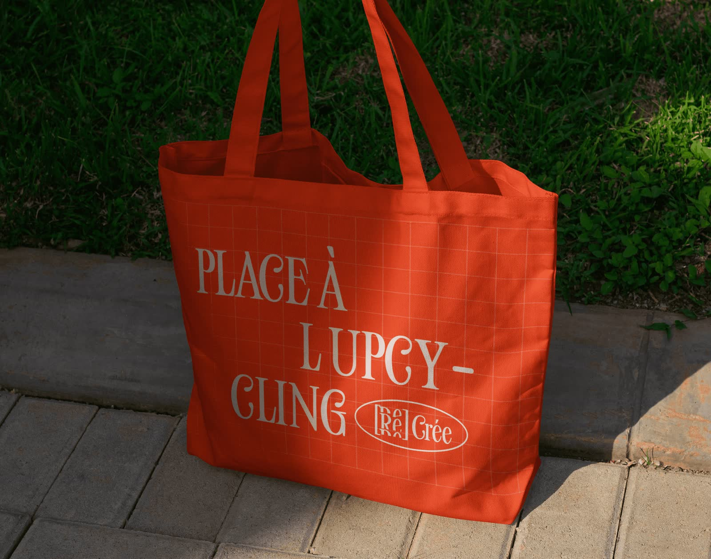
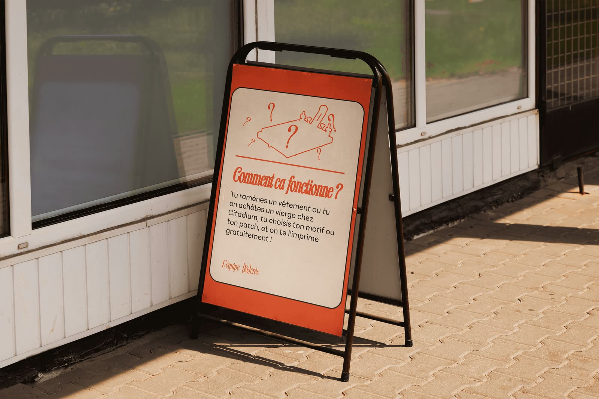
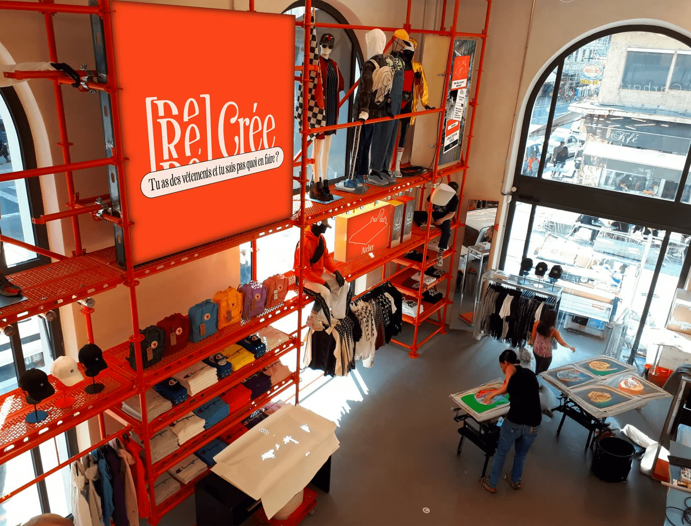
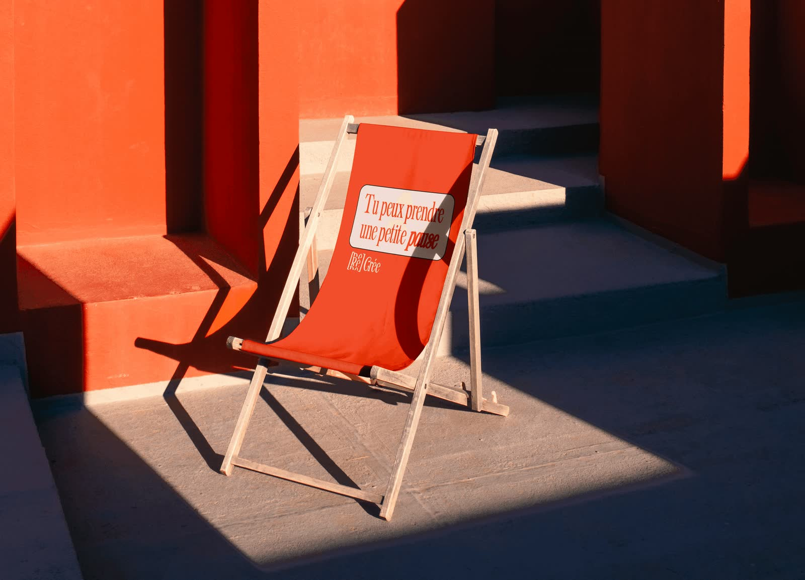
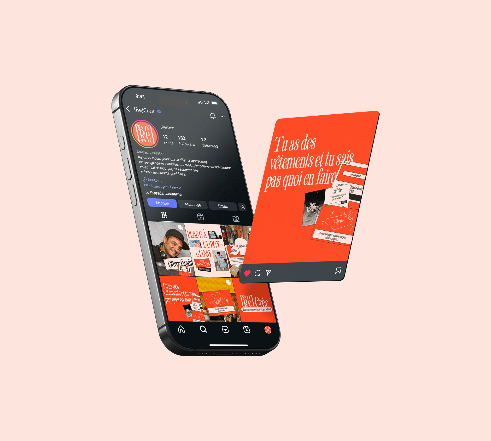
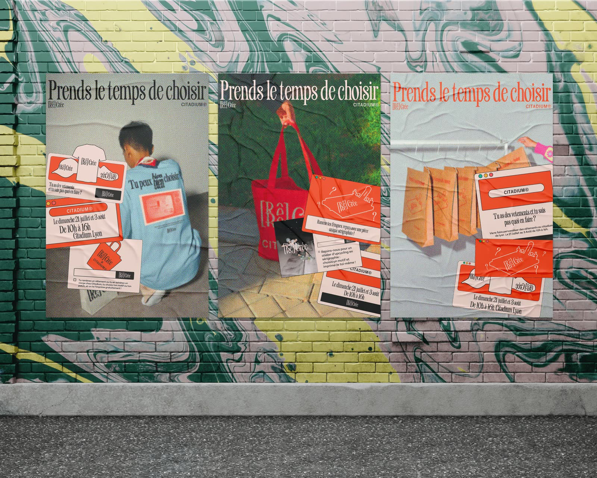
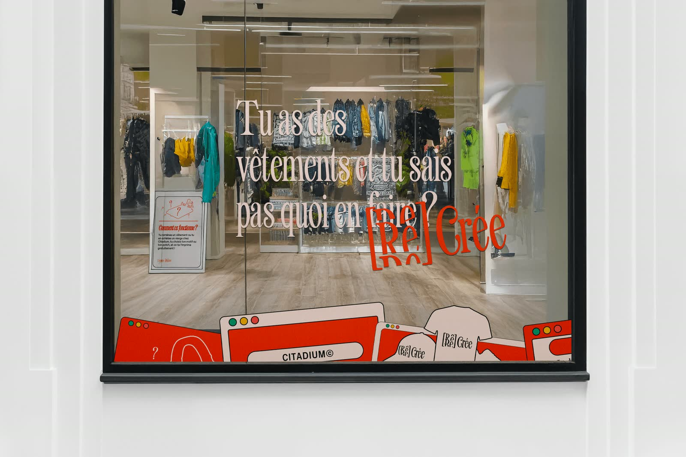

ReCrée
Intro
Face aux enjeux de la fast fashion, Citadium Lyon souhaite remettre en avant le travail artisanal en proposant un événement d’upcycling au sein de son magasin. Pour accompagner cette initiative, l’objectif est de créer une identité visuelle dédiée à l’événement, comprenant un système d’affiches, des supports de communication pour les réseaux sociaux ainsi que des visuels imprimés et produits pendant l’événement.
Deliverables:
- Direction artistique
- Identité visuelle
- Réseaux sociaux
- Design produit








Mon concept graphique utilise des GIFs animés de pop-ups qui apparaissent et disparaissent, à l'image de ceux qu'on trouve sur les sites internet. Ces fenêtres, emblématiques des stratégies agressives du marketing digital newsletters, codes promos sont particulièrement répandues dans l'univers de la fast fashion. En les détournant de façon ironique, je cherche à questionner ces mécanismes de persuasion et souligner l'absurdité de leur omniprésence dans notre quotidien numérique.
Projet suivant